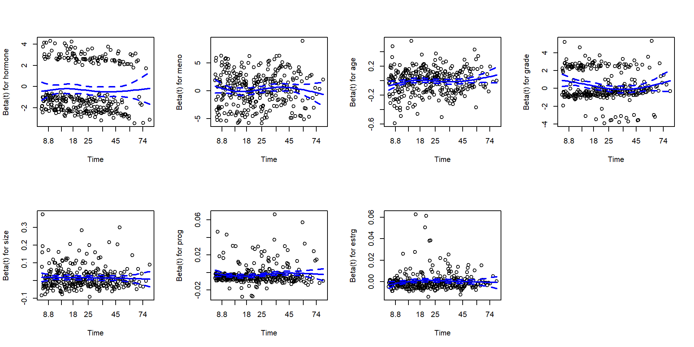
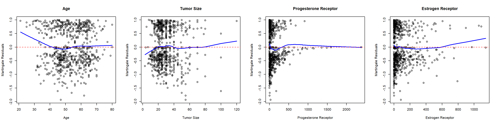

# The data frame 'gbc' contains:# time: time (months) to death, relapse, or censoring# status: event indicator (1 = relapse, 2 = death, 0 = censoring)# other covariates the same as in gbc_mor.
Analysis Goals
Descriptive
Summarize patient characteristics
Visualize survival distributions
Inferential
Compare survival curves (e.g., hormone therapy vs. no hormone therapy)
Assess impact of covariates on survival (e.g., age, tumor size, etc.)
Model competing risks (e.g., relapse vs. death)
Predictive
Develop risk prediction models
Evaluate model performance (e.g., concordance index, calibration)
coxph(): Fit Cox proportional hazards regression models
survreg(): Fit parametric survival regression models
Kaplan-Meier Survival Curves
Create dataset for relapse-free survival
# Sort by subject id, then timeo <-order(gbc$id, gbc$time)gbc <- gbc[o,]# Keep only first row per subject => first eventdf <- gbc[!duplicated(gbc$id), ]# Convert status > 0 to 1 if it is either relapse or deathdf$status <-ifelse(df$status >0, 1, 0)head(df)
# Create new data for prediction# specify all covariate valuesnew_data <-data.frame(hormone =1, meno =1, age =45, grade =2, size =20, prog =100, estrg =100)new_data
hormone meno age grade size prog estrg
1 1 1 45 2 20 100 100
Cox Model - Prediction (II)
Predict survival probabilities at specified time points
# Predict survival probabilities at 6, 12, 24, 26 monthspredicted_survival <-survfit(cox_fit, newdata = new_data[1, ], times =c(6, 12, 24, 36))summary(predicted_survival, times =c(6, 12, 24, 36))
Difference between observed and expected covariate values at each event time
Use cox.zph() to test PH assumption
ph_test <-cox.zph(cox_fit)ph_test # Print test results
chisq df p
hormone 0.272 1 0.6017
meno 5.514 1 0.0189
age 9.430 1 0.0021
grade 8.490 1 0.0036
size 0.872 1 0.3505
prog 4.881 1 0.0272
estrg 5.403 1 0.0201
GLOBAL 20.636 7 0.0043
Cox Model - Check PH Assumptions (II)
Graphical check of PH assumptions
Plot Schoenfeld residuals against time
par(mfrow=c(2, 4)) # Set up 2x4 plotting area for 7 covariatesplot(ph_test, se =TRUE, col ="blue", lwd =2) # Plot Schoenfeld residuals

Cox Model - Check Covariate Forms
Check linearity of covariate effects
Plot martingale residuals against (quantitative) covariates
# Extract martingale residuals mart_resid <-residuals(cox_fit, type ='martingale')
Plotting
par(mfrow=c(1, 4)) # Set up 1x4 plotting area for 4 covariates# Plot martingale residuals against ageplot(df$age, mart_resid, xlab ="Age", ylab ="Martingale Residuals",main ="Age")# Add smoothed linelines(lowess(df$age, mart_resid), col ="blue", lwd =2)abline(h =0, col ="red", lty =2) # Add horizontal line at 0# Repeat for other covariatesplot(df$size, mart_resid, xlab ="Tumor Size", ylab ="Martingale Residuals",main ="Tumor Size")lines(lowess(df$size, mart_resid), col ="blue", lwd =2)abline(h =0, col ="red", lty =2) # Add horizontal line at 0plot(df$prog, mart_resid, xlab ="Progesterone Receptor", ylab ="Martingale Residuals",main ="Progesterone Receptor")lines(lowess(df$prog, mart_resid), col ="blue", lwd =2)abline(h =0, col ="red", lty =2) # Add horizontal line at 0plot(df$estrg, mart_resid, xlab ="Estrogen Receptor", ylab ="Martingale Residuals",main ="Estrogen Receptor")lines(lowess(df$estrg, mart_resid), col ="blue", lwd =2)abline(h =0, col ="red", lty =2) # Add horizontal line at 0

Coding Exercise
Exercise
Residual analyses show that the proportional hazards assumption is violated for tumor grade, and that the effect of age is not linear.
Fit a different model to address these issues.
Sample solution
# Dichotomize age at 40df$age40 <-ifelse(df$age <40, 0, 1)# Fit Cox model stratified by tumor grade and with binary age cox_fit2 <-coxph(Surv(time, status) ~ hormone + meno + age40 + size + prog + estrg +strata(grade), data = df)summary(cox_fit2) # Print model summary
Summary
Key Takeaways
Survival analysis is essential for (often censored) time-to-event data